교통기사 (2013-03-10 기출문제)
1과목: 교통계획
1. 내부수익률(IRR)의 특징에 대한 설명 중 옳지 않은 것은?
- 사업의 수익성을 측정할 수 있다.
- 평가과정과 결과를 이해하기 쉽다.
- 다른 대안과 비교하기 쉽다.
- 사업의 절대적인 규모를 고려할 수 있다.
(정답률: 91%)

2. 사업의 경제성을 가늠하는 척도 중 하나인 순현재가치(NPV)에 대한 설명으로 옳은 것은?
- 현재가치로 환산된 장래의 연도별 편익의 합계를 현재 가치로 환산된 장래의 연도별 비용의 합계로 나눈 값이다.
- 현재가치로 환산된 장래의 연도별 비용의 합계를 현재 가치로 환산된 장래의 연도별 편익의 합계로 나눈 값이다.
- 현재가치로 환산된 장래의 연도별 편익의 합계에서 현재 가치로 환산된 장래의 연도별 비용의 합계를 뺀 값이다.
- 현재가치로 환산된 장래의 연도별 비용의 합계에서 현재 가치로 환산된 장래의 연도별 편익의 합계를 더한 값이다.
(정답률: 94%)
3. 사용자 균형 모형에서의 기본 가정과 원리에 대한 내용으로 거리가 먼 것은?
- 사용자 균형 상태에 도달하면 사회적인 총비용이 최소화 된다.
- 통행자는 모든 링크의 통행시간에 대한 완전한 정보를 가지고 있다.
- 통행자의 통행경로 선택행위는 그들의 통행시간 최소화를 목표로 한다.
- 출발지와 목적지 사이의 통행량은 고정되어 있다.
(정답률: 78%)
4. 토지이용과 도시교통과의 관계에 대하여 교통체계는 토지이용현상, 교통공급설, 교통현상으로 구성된다고 정의한 학자는?
- Perkin
- Rummer
- Black
- Tamazinis
(정답률: 85%)
5. 다음 중 수단선택(model split) 단계에서 사용하는 분석 모형은?
- 로짓모형 (Logit model)
- 성장률법
- 다이알(Dial)모형
- 디트로이트(Detroit)모형
(정답률: 60%)
6. 기∙종점 조사 자료에 대하여 신뢰성에 대한 검증 및 보완을 위한 목적으로 실시하는 것은?
- 가구면접조사
- 스크린라인조사
- 터미널조사
- 노측면접조사
(정답률: 93%)
7. 다음의 설명에 해당하는 보행자시설의 효과척도는?
- 보행교통류율
- 보행점유공간
- 보행자 평균지체
- 보행자 유효보도폭
(정답률: 95%)
8. 4단계 교통수요 추정 모형에 비하여 개별행태모형이 갖는 특징으로 옳은 것은?
- 보다 중ㆍ장기적인 교통계획의 수립에 유용하다.
- 존별 집계자료에 근거하여 개발된 모형이다.
- 비용이 많이 들고 결과 도출에 시간이 오래 걸린다.
- 교통존에 한정하지 않기 때문에 어떤 지역에도 적용이 가능하다.
(정답률: 85%)
9. 승용차, 버스, 지하철의 효용함수값이 각각 -1.0, -1.5, -1.5 일 때, 로짓모형에 의한 승용차의 선택확률은?
- 약 27.4%
- 약 36.1%
- 약 45.2%
- 약 52.1%
(정답률: 77%)
10. 주차수요추정법 중 주차이용효율(e)을 이용하는 것은?
- P요소법
- 과거추세연장법
- 누적주차수요추정법
- 기ㆍ종점에 의한 주차수요추정법
(정답률: 95%)
11. 다음 도로의 운영 방법 중 도로구간을 홀수차로로 구획하고 중앙의 한 개 차로를 좌회전 교통류를 처리하여 회전 교통류에 의해 직진교통류가 방해받음으로써 발생하는 링크 및 교차로의 용량저하현상을 감소시키는 효과가 있는 것은?
- 가변차로제
- 능률차로제
- 일방차로제
- 우선차로제
(정답률: 81%)
12. 제한속도를 다시 결정하고자 진행하는 차량의 속도조사시 속도의 표준편차를 24km/h, 허용오차를 2km/h로 하고자 할 때 필요한 표본의 수는? (단, 신뢰도는 95% 이다.)
- 390개
- 400개
- 480개
- 560개
(정답률: 74%)
13. 통행에 대한 설명 중 옳지 않은 것은?
- 어떤 목적을 가진 사람이 이동하기 시작하여 정지하기까지의 여행(Journey)을 통행(trip)이라 일컫는다.
- 하나의 통행 목적을 달성하기 위해 종종 몇 개의 다른 교통수단을 이용하게 되는데 이를 수단통행이라 한다.
- 통행자체를 수단통행이라 부르며, 일반적으로 통행이라 할 때는 수단통행을 의미한다,
- 통행의 주체는 교통행위의 주체로서 사람과 화물이 있다.
(정답률: 95%)
14. 다음 중 장ㆍ단기 교통계획에 대한 설명으로 옳은 것은?
- 단기교통계획은 소수의 대안, 장기교통계획은 다수의 대안
- 단기교통계획은 교통수요가 비교적 고정, 장기교통계획은 교통수요가 변화 가능
- 단기교통계획은 자본집약적, 장기교통계획은 저자본 비용
- 단기교통계획은 서비스 지향적, 장기교통계획은 시설지향적
(정답률: 94%)
15. 다음 중 AHP(계층분석법)의 3가지 원리에 해당하지 않는 것은?
- 계층적 구조설정의 원리
- 상대적 중요도 설정의 원리
- 의사결정과정 민감도 분석의 원리
- 논리적 일관성의 원리
(정답률: 69%)
16. 다른 대중교통수단에 비하여 일반적으로 다음과 같은 특성을 갖는 것은?
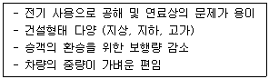
- 지하철
- 지프니
- 경전철
- 버스
(정답률: 100%)
17. 도시교통계획의 과정과 그 방법에 있어 기초가 이루어진 광역권 교통조사분석으로, 1950년대에 사람 통행실태조사가 최초로 시행된 도시는?
- 뉴욕
- 시카고
- 디트로이트
- 워싱턴
(정답률: 72%)
18. 자동차에 사람이나 화물을 실은 채 철도로 운반하는 시스템은?
- Car Ferry 시스템
- Piggyback 시스템
- Dual-mode Bus 시스템
- Container 시스템
(정답률: 100%)
19. 평형배정모형에 있어 운전자가 이기적으로 자신의 통행시간만을 단축시키려는 의도가 결과적으로 모든 운전자에게 피해를 초래하는 현상을 무엇이라 하는가?
- IIA(Independence of Inrrelevant Alternative)
- 브라에스의 역설(Braess's Paradox)
- 다운스-톰슨의 역설(Downs-Thomson Paradox)
- 루이스-모그리지의 명제(Lewis-Mogrdige Position)
(정답률: 95%)
20. 다음 교통량에 따른 PHF값은 얼마인가?
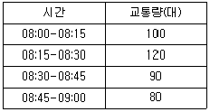
- 0.8125
- 0.8825
- 0.9425
- 0.9825
(정답률: 80%)
2과목: 교통공학
21. 다음 설명에 해당하는 교통류 모형은?
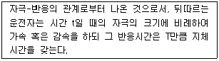
- 추종이론
- 가속소음이론
- 충격파이론
- 대기행렬이론
(정답률: 67%)
22. 교통공학에서 사용되는 확률분포를 크게 계수분포(counting distribution)와 간격분포(gap distribution)로 구분할 때, 다음 중 계수분포에 해당하지 않는 것은?
- 포아송(Poisson) 분포
- 이항(Binomial) 분포
- 초기하(Hypergeometric) 분포
- 음지수(Negative Exponential) 분포
(정답률: 78%)
23. 다음 중 고속도로의 서비스 교통량 산정 시 고려되는 요소가 아닌 것은?
- 차로폭
- 중차량 비율
- 측방여유폭
- 주변 가로의 개발상태
(정답률: 90%)
24. 차량 A가 10m/sec의 속도로 아래와 같은 조건을 가진 교차로에 접근하고 있을 때 황색신호시간은 얼마인가?
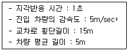
- 2.0초
- 4.0초
- 6.5초
- 8.5초
(정답률: 54%)
25. 30m의 도로구간을 2대의 차량이 통행한 시간이 각각 1초, 2초 일 때 공간평균속도는 얼마인가?
- 10km/h
- 22.5km/h
- 36km/h
- 72km/h
(정답률: 50%)
26. 차량 운행 중 외부자극에 대한 인간의 신체적 반응과정인 PIEV 과정에 속하지 않는 것은?
- 인지(perception)
- 식별(intellection)
- 회피(evasion)
- 의지(volition)
(정답률: 65%)
27. 고정식(정주기식) 신호에 대한 설명이 틀린 것은?
- 신호 주기가 일정하기 때문에 인접 신호등과의 연동이 용이하다.
- 감응식 신호에 비하여 보행자 교통향이 일정하면서 많은 곳에 적합하다.
- 교통의 흐름을 방해하는 조건의 영향을 받지 않는다.
- 교통량의 시간별 변동이 클 경우 지체를 최소화한다.
(정답률: 80%)
28. 신호교차로의 용량분석 시 이상적인 조건 기준으로 옳지 않은 것은?
- 교통류는 모두 승용차로 구성된다,
- 접근부 정지선의 상류뷰 75m 이내에 노상 주ㆍ정차 시설이 없어야 한다.
- 경사는 2% 이내, 차로폭은 3.5m 이상이어야 한다.
- 접근부 정지선의 상류부 75m 이내에 버스정류장이 없어야 한다.
(정답률: 67%)
29. 일정시간 동안 특정지점을 통과한 차량의 산술평균 속도로서 속도분석, 교통사고분석에 이용되는 것은?
- 공간평균속도(space mean speed)
- 시간평균속도(time mean speed)
- 평균통행속도(mean travel speed)
- 설계속도(design speed)
(정답률: 70%)
30. 다음 중 시공도(time-space diagram)의 작성에 필요하지 않은 것은?
- 교차로간의 거리
- 차로수
- 연속진행속도
- 신호주기 및 현시길이
(정답률: 73%)
31. 교통류 모형 중 수학적으로는 가장 단순하고 사용하기 편리하지만, 현실적인 혼잡밀도의 값을 나타내기가 어려운 것은?
- Greenberg 모형
- Greenshields 모형
- Underwood 모형
- Drake 모형
(정답률: 86%)
32. A차량이 일정 구간의 도로를 주행하는데 15분이 소요되었으며, 여행 중 5대의 차량이 A차량을 추월하고 A차량이 3대를 추월하였다. 이 구간에서 차량의 평균주행시간은? (단, A차량 주행방향의 교통량은 150대/시간이다.)
- 12.8분
- 14.2분
- 16.6분
- 19.0분
(정답률: 47%)
33. 신호교차로가 90초의 주기로 운영되고, 임계차로군의 교통량비의 합이 0.72일 때 교차로 전체의 임계 V/c비 값으로 0.76을 얻었다. 이 교차로의 매 주기당 총 손실시간은?
- 약 3초
- 약 5초
- 약 7초
- 약 9초
(정답률: 30%)
34. 양방향정지 비신호교차로의 서비스수준을 분석하기 위한 효과척도로 사용되는 것은?
- 방향별 교차로 진입교통량
- 밀도
- 시간당 상충횟수
- 평균운영지체
(정답률: 58%)
35. 자유속도 60km/시, 정체(임계)밀도 400대/km를 갖는 교통류를 Greenshields 모형을 적용하여 분석할 때 용량은?
- 2400대/시
- 4800대/시
- 6000대/시
- 8000대/시
(정답률: 32%)
36. 도로의 일정 구간을 주행하는 각 차량들의 속도가 동일하지 않은 경우 공간평균속도와 시간평균속도의 관계를 옳게 설명한 것은?
- 공간평균속도와 시간평균속도는 같다.
- 공간평균속도가 시간평균속도보다 작다.
- 공간평균속도가 시간평균속도보다 크다.
- 공간평균속도와 시간평균속도는 비교할 수 없다.
(정답률: 74%)
37. 도로의 일정지점을 통과하는 차량을 15초 단위로 분석한 결과 평균이 1.7대, 분산이 1.8대이었다. 해당 지점을 통과하는 차량이 2대 이하로 도착할 확률은?
- 약 71.2%
- 약 73.5%
- 약 75.7%
- 약 77.1%
(정답률: 72%)
38. 단일 서비스 기관의 대기행렬모형(M/M/1)에서 평균도착률이 λ, 평균서비스율이 μ일 때 시스템 내에 차량이 한 대도 없을 확률은?
- μ - λ
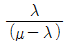
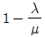
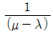
(정답률: 80%)
39. 속도누적분포에서 일반적으로 교통류 내에서의 합리적인 속도의 최대값을 나타내어 현장의 도로조건에 적합한 교통운영계획을 세우는데 기준으로 삼는 속도는?
- 100% 속도
- 85% 속도
- 50% 속도
- 25% 속도
(정답률: 84%)
40. 주기당 총손실시간이 10초, 임계이동류의 교통량비의 합이 0.6일 때, Webster 식을 이용한 최적주기는?
- 30초
- 40초
- 50초
- 60초
(정답률: 86%)
3과목: 교통시설
41. 다음 중 도로의 구조 및 시설에 관한 규칙에서 규정하고 있는 설계기준 자동차에 해당하지 않은 것은?
- 승용자동차
- 증형자동차
- 대형자동차
- 세미트레일러
(정답률: 90%)
42. 다음 중 기본 차로수가 균형 상태이면서 차로수 균형의 원칙을 지키고 있는 설계는?
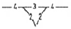
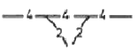
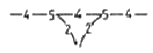
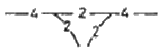
(정답률: 87%)
43. 다이아몬드형 인터체인지에 대한 설명으로 틀린 것은?
- 다른 인터체인지에 비하여 필요한 용지가 적게 든다.
- 접속도로와의 연결로로 접속부분에서 생기는 평면교차 부분에서 생기는 평면교차부분에서 의 도로교통용량이 작아진다.
- 영업소 운영에 적합하나 관리비와 공사비가 많이 든다.
- 교통의 우회거리가 짧아 경제적으로 유리하다.
(정답률: 69%)
44. 도시지역의 고속도로 및 일반도로에서 중앙분리대 설치시 중앙분리대의 최소 폭은?
- 고속도로1.5m, 일반도로1m
- 고속도로2m, 일반도로1m
- 고속도로2.5m, 일반도로2m
- 고속도로3m, 일반도로2m
(정답률: 81%)
45. 도로 설계시 유의하여야 할 사항으로 바르지 않은 것은?
- 회전 차량의 대기 장소는 직전교통으로부터는 잘 보이지 않는 곳에 위치해야 한다.
- 운전자에게 90도 이상 회전하거나 갑작스럽고 급격한 배향곡선 등의 부자연스런 경로를 주어서는 안 된다.
- 운전자가 한 번에 한 가지 이상의 의사결정을 하지 않도록 해야 한다.
- 교통제어시설은 도류화의 일부분으로서 이를 고려하고 교통섬을 설계하여야 한다.
(정답률: 85%)
46. 다음 중 평면교차로에서 발생하는 상충의 종류가 모두 옳게 나열 된 것은?
- 분류상충, 합류상충, 교차상충
- 교차상충, 회전상충, 추돌상충
- 합류상충, 추돌상충, 분류상충
- 직각상충, 측면상충, 회전상충
(정답률: 89%)
47. 도로의 교통수요예측결과 목표연도의 AADT는 3200대/일 일 때 중방향 설계시간 교통량(DDHV 대/시)은 얼마인가? (단, 도로의 첨두시간집중률은 7% K30은 13% 양방향 교통량에 대한 중방향 교통량의 백분율이 65% 이다.)
- 3200×0.13×0.65
- 3200×0.07×0.65
- 1600×0.13×0.65
- 1600×0.07×0.65
(정답률: 70%)
48. 도로의 기능별 구분에 따른 설계속도 기준이 옳은 것은?
- 도시지역의 집산도로는 40km/시간 이상으로 한다.
- 지방지역의 평지부 고속도로와 도시지역 고속도로의 설계속도는 120km/시간 이상으로 한다.
- 지방지역 산지부의 주간선도로는 60km/시간 이상으로 한다.
- 도시지역의 주간선도로는 70km/시간 이상으로 한다.
(정답률: 69%)
49. 다음 중 1대당 최소 주차 소요 면적이 가장 큰 각도 주차 형식은? (단, 차종은 경형을 기준으로 하며 전진주자방식이다.)
- 30도 주차
- 45도 주차
- 60도 주차
- 90도 주차
(정답률: 96%)
50. 도로의 선형설계에서 가장 바람직한 조화를 이루는 평면선형과 종단선형의 조합은?
- 될 수 있는 한 하나의 평면곡선에 하나의 종단곡선을 대응시키도록 한다.
- 볼록형 종단곡선의 정점부에 급한 평면곡선 반지름을 삽입한다.
- 같은 방향으로 굴곡하는 두 곡선 사이에 짧은 직선을 삽입한다.
- 오목형 종단곡선의 지점부에 배향곡선의 변곡점을 둔다.
(정답률: 75%)
51. 노면이 시멘트 포장도로인 차도의 횡단경사 기준은?
- 1.0% 이상 1.5%이상
- 1.5% 이상 2.0%이상
- 2.0% 이상 2.5%이상
- 2.5% 이상 3.0%이상
(정답률: 79%)
52. 일반도로의 기능별 구분에 상응하는 도로법에 따른 도로의 종류가 옳은 것은?
- 주간선도로에는 일반국도. 특별시도ㆍ광역시도가 해당한다.
- 보조간선도로에는 지방도, 군도, 시도가 해당 한다.
- 국지도로에는 지방도, 군도, 구도가 해당 한다.
- 집산도로에는 일반국도, 특별시도, 광역시도, 지방도, 시도, 군도가 해당 한다.
(정답률: 64%)
53. 한 차량이 곡선반경(R)이 300m인 평면곡선부를 100kph의 고속도로 주행하고 있다. 이 도로에서의 횡방향 마찰계수가 0.2일 때 차량이 미끄러지지 않기 위한 최대편경사는?
- 약 3%
- 약 5%
- 약 6%
- 약 8%
(정답률: 58%)
54. 길어깨 중 측대의 기능으로 가장 거리가 먼 것은?
- 강우시 노면배수의 집수역할을 하여 배수시 노면 패임을 방지한다.
- 차선을 이타한 자동차에 대해서 특히 속도가 높은 경우에 안전성을 향상시킨다.
- 주행 상 필요한 바퀴의 측방여유폭의 일부를 확보함으로써 차도의 효용을 유지한다.
- 차도와의 경계를 노면표시 등으로 일정 폭 만큼 명확하게 나타내고 운전자의 시선을 유도하여 운전시 안전성을 증대시킨다.
(정답률: 65%)
55. Park and Ride 주차시설을 옳게 설명한 것은?
- 공원이나 유원지에서 입장료를 낸 사람에게 개방된 주차장
- 대중교통 연계지점에서 건설된 주차장으로 이 곳에 승용차를 주차시킨 후 대중교통으로 환승하게 하기 위해서 만든 주차장
- 대규모 유원지, 상가 등에 설치된 주차장
- 공원에서 공원 내를 운행하는 셔틀버스로 갈아타기 위해 만든 주차장
(정답률: 86%)
56. 50km/h로 주행 중인 차량이 평면 신호교차로에서 전방의 신호를 인지하기 위해 확보되어야 하는 최소거리는? (단, 인지반응시간은 2,5초 감속도는 3.0m/s2이다)
- 약 57m
- 약 67m
- 약 77m
- 약 87m
(정답률: 71%)
57. 다음 중 중앙분리대의 기능으로 거리가 먼 것은?
- 광폭 분리대일 경우 사고 및 고장차량이 정지 할 수 있는 여유 공간을 제공한다.
- 필요에 따라 유턴 등을 방지하고 교통류의 혼잡이 발생되지 않도록 하여 안전성을 높인다.
- 제설 작업시 작업공간으로 활용 되며 차도의 배수 측면에서 양호한 도로 환경을 유지시켜 준다.
- 보행자에 대한 안전성이 됨으로써 안전한 횡단에 도움이 된다.
(정답률: 80%)
58. 도로의 접근관리 기법에 대한 설명으로 틀린 것은?
- 출입제한은 접근관리의 한 유형으로, 가장 강한 접근 관리 기법이다.
- 자동차전용도로와 같은 노선대로 지역 내 통행을 위한 도로가 필요한 경우에는 측도나 접근 교통류 처리를 위한 도로제공 등의 접근 관리가 필요하다.
- 간선도로의 접근관리에서는 회전교통량의 효율적인 처리와 인접한 건물로의 진출입에 대한 엄격한 통제가 중요하다.
- 개발 사업으로 인해 새로이 도로를 건설하고 그 새로운 도로를 접속시킬 주변도로로 간선도로와 집산도로가 있다면, 새로운 도로는 간선도로에 연결시켜야 한다.
(정답률: 90%)
59. 교차로의 보행자 시설 설계 시 고려할 사항으로 옳은 것은?
- 보행자의 안전을 위해 가능하면 육교나 지하도 시설을 많이 설치하는 것이 좋다.
- 교통량이 많은 도로를 횡단하는 보행자의 수는 많을수록 좋다.
- 회전교통이 적은 도로와 교차하는 도로에서는 보행자 문제를 해결하기 위한 가장 보편적인 방법은 노면횡단보도이다.
- 아주 넓은 도로의 보행자 신호등은 중앙분리대에서까지 설치할 필요는 없다.
(정답률: 80%)
60. 버스 전용차로 중 다른 전용차로 형태에 비하여 중앙버스 전용차로가 갖는 단점으로 거리가 먼 것 은?
- 부가적인 안전시설 및 신호기로 인해 비용이 많이 든다.
- 승하자 안전섬 접근거리가 길어진다.
- 전용차로에서 우회전하는 버스나 일반차로에서의 좌회전 차량에 대한 세심한 처리가 강구 되어야 한다.
- 가로변 상업 활동과의 상충이 불가피 하다.
(정답률: 93%)
4과목: 도시계획개론
61. 다음 중 도시의 내부구조를 설명하는 이론이 아닌 것은?
- 동심원이론
- 중심지이론
- 선형이론
- 다핵심이론
(정답률: 64%)
62. 다음과 같은 가로망 형태는?
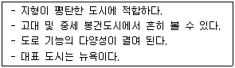
- 방사형
- 혼합형
- 방사환상형
- 격자형
(정답률: 87%)
63. 토지구획정리사업에서 사업시행 전에 존재하던 권리 관계에 변동을 가하지 않고 원래 토지 소유자 토지 위치, 지적, 토지이용상황 및 환경 등을 고려하여 사업시행 후 새로이 조성된 대지에 기존의 권리를 이전하는 행위를 무엇이라 하는가?
- 체비지
- 환지
- 감보
- 지목변경
(정답률: 65%)
64. 도시ㆍ군 관리계획의 내용에 해당하지 않는 것은?
- 용도지역ㆍ용도지구의 지정 또는 변경에 관한 계획
- 개발제한구역, 도시자연공원구역, 시가화조정구역, 수산자원보호구역의 지정 또는 변경에 관한 계획
- 시ㆍ군의 공간구조와 장기적인 발전방향에 관한 계획
- 도시개발사업이나 정비사업에 관한 계획
(정답률: 59%)
65. 기반시설 중 '공동구' 는 다음의 어느 시설에 해당하는가?
- 방재시설
- 유통ㆍ공급시설
- 보건위생시설
- 환경기초시설
(정답률: 78%)
66. 도시공원의 유형을 크게 생활권공원과 주제공원으로 구분 할 때 다음 중 주제공원에 해당하지 않는 것은?
- 문화공원
- 수변공원
- 체육공원
- 어린이공원
(정답률: 84%)
67. 성장극(growth pole)이라는 용어를 사용하고 거점개발 이론을 경제적 차원에서 다루어 체계화 한 사람은?
- P. Wolf
- F. C. Perroux
- B. Berry
- C. Stein
(정답률: 59%)
68. 도시의 인구가 처음에는 완만하게 증가하다가 일정시점이후에 급격하게 증가하다가 다시 완만하게 증가할 것으로 예상되는 지역의 인구예측에 적합한 모형은?
- 지수성장모형(Exponential Growth Model)
- 곰페르츠모형(Gompertz Model)
- 집단생존모델(Cohort-survival Model)
- 선형모델(Linear Model)
(정답률: 50%)
69. 도시 및 지역경제 분석 방법 중 경제기반모형 (economic base model)에 대한 설명으로 옳지 않은 것은?
- 단순하고 이해가 쉬워 모형의 적용이 용이한 편이다.
- 분석에 필요한 자료의 구독이 매우 어렵다.
- 모형을 이용한 지역분석에서 가정하는 내용들에 한계가 있다.
- 지역의 성장이 지역에서 생산되는 재화의 외부 수요에 의해 경절된다는 것에 기초한다.
(정답률: 62%)
70. 도시의 특성으로 볼 수 없는 것은?
- 높은 인구밀도
- 사회적 익명성 증가
- 1차 산업증가
- 사회적 개성화 증가
(정답률: 84%)
71. 도시 및 주거환경정비법에 따라 정비기반시설은 양호하나 노후ㆍ불량건축물이 밀접한 지역에서 주거환경을 개선하기 위하여 시행하는 사업은?
- 주택재건축사업
- 주택재개발사업
- 주거환경관리사업
- 도시환경정비사업
(정답률: 64%)
72. 토지이용이 교통에 미치는 영향을 교통수요로 측정한다면 교통이 토지이용에 미치는 영향은 어떤 특성으로 나타 낼 수 있겠는가?
- 접근성
- 경제성
- 합리성
- 복잡성
(정답률: 67%)
73. 게데스(P.Geddes)가 제안한 개념으로 한 때 분리되어 있던 취락이 방사형 발달을 통해 하나의 연속적인 시가지로 합쳐지는 현상을 무엇이라고 하는가?
- 메트로폴리스(Metropolis)
- 메갈로폴리스(Megalopolis)
- 코너베이션(Conurbation)
- 에큐메노폴리스(Ecumenopolis)
(정답률: 65%)
74. 도시공원 및 녹지 등에 관한 법률에서 기능에 따라 세분한 녹지의 종류가 아닌 것은?
- 완충녹지
- 경관녹지
- 보존녹지
- 연결녹지
(정답률: 50%)
75. 총 인구가 30만명이고 아래와 같은 조건을 가진 도시의 공업지역의 소요면적은?
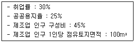
- 4⑤.0 ha
- 40.5 ha
- 540.0 ha
- 54.0 ha
(정답률: 57%)
76. 기능별 구분에 따른 도로의 배치간격 기준이 틀린 것은?
- 주간선도로와 주간선도로의 배치간격 : 2,000m 내외
- 주간선도로와 보조간선도로의 배치간격 : 500m 내외
- 보조간선도로와 집산도로의 배치간격 : 250m 내외
- 국지도로간의 배치간격 : 가구의 짧은 변 사이의 배치간격은 90m 내지 150m 내외, 가구의 긴 변 사이의 배치간격25m 내지 60m 내외
(정답률: 67%)
77. 제1차 국토종합개발계획과 비교하여 제2차 국토종합개발계획이 갖는 특징으로 거리가 먼 것은?
- 전국을 28개 생활권으로 구분하고 각 생활권의 중심도시와 주변지역을 상호 연계하여 발전될 수 있도록 시도하였다.
- 다핵구조의 형성방안으로 성장 거점도시정책이 채택되었다.
- 각 도의 경제활동 중심인 지방 대도시를 중심으로 성장관리정책을 추진하였다.
- 국토의 균형발전을 꾀하고 국민생활환경개선에 많은 노력을 기울였다.
(정답률: 32%)
78. 1위 도시의 인구가 600만명 2위 도시의 인구가 200만명 3위 도시의 인구가 50만명 4위 도시의 인구가 10만명일 경우 데이비드의 종주화 지수는?
- 0.27
- 0.43
- 2.3
- 3
(정답률: 40%)
79. 다음 중 용도지역별 도로율 기준이 옳은 것은?
- 녹지 지역은 10%이상 20%미만이며, 이 경우 주간선 도로의 도로율은 5%이상 10%미만이어야 한다.
- 주거지역은 20%이상 30% 미만이며, 이 경우 주간선 도로의 도로율은 10%이상 15%미만이어야 한다.
- 상업지역은 20%이상 30% 미만이며, 이 경우 주간선 도로의 도로율은 10%이상 15%미만이어야 한다.
- 공원지역은 20%이상 30%미만이며, 이 경우 주간선 도로의 도로율은 5%이상 10%미만이어야 한다.
(정답률: 74%)
80. 그리스의 도시국가에 대한 설명으로 옳지 않은 것은?
- 시가지에 위치한 포럼은 종교적인 중심지가 되었다.
- 아테네는 가장 발달한 대표적인 도시국가였다.
- 히포다무스는 격자형 도로망을 발전시켰다.
- 대부분의 도시민 주택은 폐쇄형으로 중정을 향해 배치되었다.
(정답률: 57%)
5과목: 교통관계법규
81. 도시교통정비지역으로 지정·고시할 수 있는 기준이 옳은 것은?
- 인구 5만명 이상의 도시
- 인구 10만명 이상의 도시
- 인구 15만명 이상의 도시
- 인구 20만명 이상의 도시
(정답률: 77%)
82. 도로교통법 시행규칙에 따른 횡단보도의 설치기준이 틀린 것은?
- 횡단보도에는 횡단보도표시와 횡단보도 표지판을 설치한다.
- 횡단보도는 육교·지하도 및 다른 횡단보도로부터 500m 이내에는 설치하지 아니한다.
- 횡단보도를 설치하고자 하는 장소에 횡단보행자용 신호기가 설치되어 있는 경우에는 횡단 보도표시를 설치한다.
- 횡단보도를 설치하고자 하는 도로의 표면이 포장이 되지 아니하여 횡단보도표시를 할 수 없는 때에는 횡단보도 표지판을 설치한다.
(정답률: 65%)
83. 교통안전법상 교통안전관리자의 종류에 해당하지 않는 자는?
- 도로교통안전관리자
- 철도교통안전관리자
- 항만교통안전관리자
- 선박교통안전관리자
(정답률: 77%)
84. 노상주차장의 구조·설비기준이 틀린 것은?
- 주차대수 규모가 20대 이상인 경우에는 장애인 전용 주차구획을 2면 이상 설치하여야 한다.
- 고속도로, 자동차전용도로 또는 고가도로에 설치하여서는 아니 된다.
- 종단경사도가 4%를 초과하는 도로에 설치하여서는 아니된다.
- 노상주차장의 주차구획 설치에 필요한 사항은 해당 지방자치단체의 조례로 정할 수 있다.
(정답률: 50%)
85. 다음 중 도로교통법에 따른 정의가 틀린 것은?
- 안전지대란 보도와 차도가 구분되지 아니한 도로에서 보행자의 안전을 확보하기 위한 안전표지 등으로 경계를 표시한 도로의 가장자리 부분을 말한다.
- 보도란 연석선, 안전표지나 그와 비슷한 인공구조물로 경계를 표시하여 보행자가 통행할 수 있도록 한 도로의 부분을 말한다.
- 신호기란 도로교통에서 문자·기호 또는 등화를 사용하여 진행·정지·방향전환·주의 등의 신호를 표시하기 위하여 사람이나 전기의 힘으로 조작하는 장치를 말한다.
- 자동차전용도로란 자동차만 다닐 수 있도록 설치된 도로를 말한다.
(정답률: 78%)
86. 교통안전법에 따라 국가교통안전기본계획에 포함되어야 할 내용으로 거리가 먼 것은?
- 교통안전정책의 목표달성을 위한 부문별 추진전략
- 교통안전지식의 보급 및 교통문화 향상 목표
- 교통안전 전문인력의 양성
- 교통안전 담당자 지정에 관한 사항
(정답률: 73%)
87. 장애인 전용주차인 경우의 주차단위 구획의 너비와 길이 기준이 모두 옳은 것은? (단, 평행주차형식 외의 경우이다.)
- 3.0m 이상, 5.0m 이상
- 3.0m 이상, 5.1m 이상
- 3.3m 이상, 5.0m 이상
- 3.3m 이상, 6,0m 이상
(정답률: 66%)
88. 도시교통정비촉진법령상 시장 또는 군수가 도시교통정비기본계획을 수립하기 위하여 실시하는 조사에서 포함되어야 할 사항으로 거리가 먼 것은?
- 인구 등 사회·경제지표 현황 및 전망
- 자동차 보유 현황 및 증가 추세
- 간선도로 및 교차로에서의 교통량 현황과 그 변화 추이
- 주차장 현황과 이용 특성 추이
(정답률: 62%)
89. 도로법 시행령 상 도로를 굴착하여 공작물을 신설하려는 자는 그 정용에 관한 사업계획서와 첨부서류를 매년 정해진 달 중에 제출하여야 한다. 다음 중 그 제출시기에 해당하지 않는 달은?
- 1월
- 3월
- 7월
- 10월
(정답률: 60%)
90. 도시교통정비촉진법에 따른 교통시설에 해당하는 것으로만 나열된 것은?
- 도로, 주차장, 철도
- 도로, 차고, 안전지대
- 주차장, 항만, 신호기
- 도로, 공항 , 안전시설
(정답률: 70%)
91. 도로법 시행령 상 도로정책심의회의 심의 사항이 아닌 것은?
- 도로 노선의 지점에 관한 사항
- 접도구역의 지정에 관한 사항
- 도로의 건설재원ㆍ장기계획 등에 관한 사항
- 주요 지하매설물의 안전 대책에 관한 사항
(정답률: 36%)
92. 다음 중 교통안전법상 지정행정기관에 해당하지 않는 것은? (단, 국무총리가 지정하는 중앙행정기관은 고려하지 않음.)
- 국방부
- 지식경제부
- 농림수산식품부
- 교육과학기술부
(정답률: 53%)
93. 도로교통법에 따른 정차 및 주차의 금지 장소 기준이 틀린 것은?
- 교차로·횡단보도·건널목이나 보도와 차도가 구분된 도로의 보도
- 교차로의 가장자리나 도로의 모퉁이로부터 10m 이내인 곳
- 안전지대가 설치된 도로에서는 그 안전지대의 사방으로부터 각각 10m 이내인 곳
- 건널목의 가장자리로부터 10m 이내인 곳
(정답률: 62%)
94. ( ) 안에 공통으로 들어갈 말로 옳은 것은?
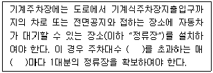
- 10대
- 20대
- 30대
- 50대
(정답률: 58%)
95. 시설물의 부지 인근에 단독 또는 공동으로 부설주차장을 설치할 수 있는 부설주차장의 규모 기준은?
- 주차대수 300대 이하
- 주차대수 200대 이하
- 주차대수 100대 이하
- 주차대수 50대 이하
(정답률: 75%)
96. 다음의 부설주차장 설치대상 시설물 중 1대를 설치하는 시설면적 기준이 다른 하나는?
- 위락시설
- 종교시설
- 문화 및 집회시설(관람장 제외)
- 판매시설
(정답률: 72%)
97. 도로교통법상 도로에서의 위험을 방지하고 교통의 안전과 원활한 소통을 확보하기 위하여 구간을 정하여 보행자나 차마의 통행을 금지하거나 제한할 수 있는 자는?
- 시장
- 지방경찰청장
- 도로 관리청
- 국토해양부장관
(정답률: 82%)
98. 도로법상 지방도에 해당하는 정의 구간이 아닌 것은?
- 도처 소재지에서 시청 또는 군청 소재지에 이르는 도로
- 시청 또는 군청 소재지를 서로 연결하는 도로
- 중요 도시, 지정항만, 중요 비행장, 관광지 등을 연결하며 고속국도와 함께 국가 기간도로망을 이루는 도로
- 도 또는 특별자치도에 있는 비행장·항만 또는 역에서 이들과 밀접한 관계가 있는 고속국도·국도 또는 지방도를 연결하는 도로
(정답률: 72%)
99. 국가통합교통체계효율화법상 국가교통관리에 중대한 차질이 발생하거나 발생할 우려가 있는 경우 이에 효과적으로 대응하기 위하여 비상 시 교통대책을 수립할 수 있는 자는?
- 행정안전부장관
- 국토해양부 장관
- 특별시장ㆍ특별자치시장
- 도지사
(정답률: 50%)
100. 도로의 관리청은 몇 년 단위로 소관 도로의 장기적인 정비방향을 제시하는 도로정비 기본계획을 수립하여야 하는가?
- 5년
- 10년
- 15년
- 20년
(정답률: 71%)
6과목: 교통안전
101. 어느 지점의 연간 교통사고 건수는 20건, 일교통량은 1000대이다. 이 지점에 교통안전시설을 설치하는 경우 사고 감소율은 20%, 장래의 일교통량은 1500대로 예상할 때 예측되는 사고감소 건수는?
- 5건
- 6건
- 7건
- 8건
(정답률: 62%)
102. 일반적으로 과속방지시설은 차량의 통행속도를 얼마 이하로 제한할 필요가 있다고 인정되는 도로에 설치하는가?
- 20km/시
- 30km/시
- 40km/시
- 50km/시
(정답률: 91%)
103. 교통사고의 유발요인을 크게 인적ㆍ도로환경적ㆍ차량요인으로 구분할 때 다음 중 인적요인에 해당하는 것은?
- 도로의 결빙
- 브레이크 파열
- 운전 중 전화통화
- 신호등 고장
(정답률: 93%)
104. 다음 중 가시도가 불량하여 발생하는 야간사고의 예방대책과 거리가 먼 것은?
- 시선유도표지 설치 또는 개량
- 방호책 설치
- 가로조명시설 신설 또는 증설
- 야광주의표지 설치
(정답률: 90%)
1⑤. 지하식 보행시설에 대한 설명으로 옳지 않는 것은?
- 유지ㆍ관리가 어려운 편이다.
- 범죄의 가능성이 크다.
- 시각적으로나 물리적으로 도시미관을 해친다.
- 외부를 볼 수 없으므로 방향 감각을 잃기 쉽다.
(정답률: 84%)
106. A차량이 25m를 활주한(skidding) 후 12m높이의 언덕에서 추락하였다. 추락 후 노면에 떨어진 지점까지의 수평거리가 15m일 경우 A차량의 초기속도는? (단, 중력가속도는 9.8m/sec2, 마찰계수는 0.7이다.)
- 약 75.1km/h
- 약 78.5km/h
- 약 80.1km/h
- 약 83.5km/h
(정답률: 34%)
107. 차가 주행할 때 타이어의 공기압이 적은 상태이며 타이어 접지면이 압축되어 변형하면서 회전하므로 타이어는 물결치는 모양이 되어 파열의 원인이 된다. 이러한 현상을 무엇이라 하는가?
- 패드 현상
- 로우드 홀딩 현상
- 스탠딩 웨이브 현상
- 하이드로 플래닝 현상
(정답률: 94%)
108. 사고다발지역 또는 사고취약지역을 선정하는 방법에 대한 설명이 잘못된 것은?
- 사고율법 – 차량이 도로의 특정 구간을 운행한 거리나 하나의 노드 혹은 교차로로 진입하는 교통량에 대한 사고건수로 결정
- 한계사고율법 – 특정 지역 또는 구간에서의 실제 사고율을 유사한 지역 또는 구간들의 평균 사고율과 비교하여 결정
- 사고심각도법 – 인명이나 재산상의 금전적 손실에 따라 사고의 심각도를 산출하여 이를, 가중치로 반영한 사고 건수에 따라 결정
- 선형밀도법 – 단위 면적(예 : km2)당 사고 건수로 결정
(정답률: 62%)
109. 충돌도(collision diagram)에 관한 설명이 옳지 않은 것은?
- 사고에 관련된 차량이나 보행자의 경로를 나타낸다.
- 사고의 패턴을 알 수 있다.
- 사고패턴과 예방책의 시행에 따른 결과를 확인하기는 어렵다.
- 분석 상 지장이 없는 범위에서 길이 방향의 축척을 적당히 조절하여 작도한다.
(정답률: 74%)
110. 도로교통안전을 강화하기 위해 사용하는 3E에 포함 되지 않는 것은?
- 교육(Education)
- 공학(Engineering)
- 단속(Enforcement)
- 권장(Encouragement)
(정답률: 72%)
111. 높은 사고발생빈도수를 갖는 지점의 다음 해의 사고발생 빈도를 측정해보면 그 전년에 비해 낮게 나타난다. 이것은 교통사고가 가장 많이 발생한 해에 그 지점이 사고다발지점으로 선정되고, 어느 지점의 사고발생률이 매년 높아졌다 낮아졌다 하는 변화를 하기 때문인데 이러한 현상을 무엇이라 하는가?
- 평균회귀 효과(Regression-to-Mean Effect)
- 사고이동(Accident Migration)
- 위험 보정(Risk Compensation)
- 위험 회피 이론(Threaten Avoidance Theory)
(정답률: 45%)
112. 제동에 의한 차량의 미끄럼 흔적에 대한 설명이 옳은 것은?
- 양후륜의 미끄럼 흔적들 모두가 전륜의 미끄럼 흔적을 벗어나면 직선 미끄럼으로 간주한다.
- 양후륜의 미끄럼 흔적들 중 하나가 전륜의 미끄럼 흔적을 벗어나면 직선 미끄럼으로 간주한다.
- 양후륜의 미끄럼 흔적들 모두가 전륜의 미끄럼 흔적을 벗어나지 않으면 직선 미끄럼으로 간주한다.
- 양후륜의 미끄럼 흔적들 중 하나가 전륜의 미끄럼 흔적을 벗어나지 않으면 직선 미끄럼으로 간주한다.
(정답률: 95%)
113. 도로교통사고의 일반적 특성에 대한 설명으로 옳지 않은 것은?
- 도로교통사고는 자주 발생하지 않는 희박한 사건(rare event)으로 볼 수 있다.
- 도로교통사고는 언제 발생할지 예측하기 어려운 시간적 임의성(time random event)을 지닌다.
- 도로교통사고는 어디서 발생할지 예측하기 어려운 공간적 임의성(space random event)을 지닌다.
- 도로교통사고는 주기적(cyclic)으로 발생하기 때문에 사고 유형과 발생 가능 지점의 예측이 가능하다.
(정답률: 74%)
114. 다음 중 도로정보를 전달하는 방법에 대한 설명으로 잘못된 것은?
- 규격화(Coding) - 개별 도로정보를 모아 언어(문자)로 표기하여 전달하는 것
- 병행(Redundancy) - 같은 내용의 도로정보를 서로 다른 방법으로 함께 전달하는 것
- 반복(Repetition) - 같은 내용을 같은 방법으로 2회 이상 전달하는 것
- 분산(spreading) - 도로정보가 너무 집중된 지역에서 덜 중요한 표지판을 철거하거나 상류부 또는 하류부로 이전하여 운전자가 이해할 시간을 주는 것
(정답률: 36%)
115. 충격차량을 억제하기 위하여 레일요소와 지주에 함께 의존하며 충격차량이 지주에 걸리는 것을 방지하기 위하여 돌출보를 설치하는 방호책은?
- 연성 방호책
- 반강성 방호책
- 강성 방호책
- 콘크리트 방호책
(정답률: 70%)
116. 과속방지턱의 설치 목적(기능)으로 가장 거리가 먼 것은?
- 속도제어
- 통과 교통량 억제
- 운전자의 시선 유도
- 보행자의 통행 안전 확보
(정답률: 59%)
117. 일평균교통량이 10,200대인 도로(구간길이 1.3km)에서 3년 동안 사망사고 3건, 부상사고 6건, 대물피해사고 28건이 발생하였다면 교통사고 피해정도에 의한 방법에 따른 교통사고율은? (단, 사고유형별 가중치는 사망사고 12, 부상사고 3, 대물피해사고 1 이다.)
- 2.55건
- 3.37건
- 4.41건
- 5.65건
(정답률: 67%)
118. 교통사고의 원인과 개선방안의 연결이 잘못된 것은?
- 보행자 횡단 – 보행자 안전지대 설치
- 야간사고 – 교통신호와 혼동 가능한 네온사인 등의 제한
- 시거불량 – 시선유도표지 설치
- 선형불량 – 연석(curb stone)시설 개선
(정답률: 79%)
119. 지구교통개선사업 등에 널리 적용되고 있는 교통정온화(Traffic calming) 기법 중 주행속도의 억제 기능을 갖는 대책이 아닌 것은?
- 트랜짓 몰
- 쵸커
- 시케인
- 라운드어바웃
(정답률: 78%)
120. 다음 중 교통안전개선사업의 사전ㆍ사후 분석기간을 선정할 때 고려해야 할 사항에 포함되지 않은 것은?
- 개선된 지점의 사전·사후 분석기간은 대조지점(control site)과 동일해야 한다.
- 사전 혹은 사후 분석기간은 가급적 짧을수록 정확한 분석을 시행할 수 있다.
- 사전 혹은 사후 분석기간은 적절한 양의 사고자료를 제공할 수 있을 만큼 충분히 길어야 한다.
- 교통안전개선사업을 위한 공사가 진행되고 있는 동안은 분석기간에서 제외해야 한다.
(정답률: 90%)